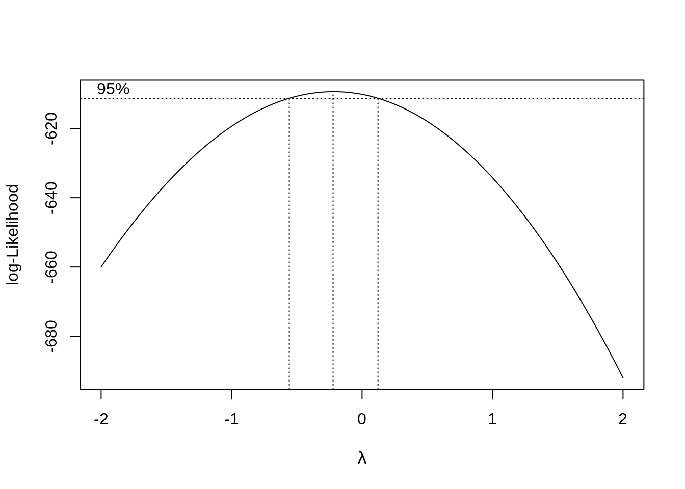
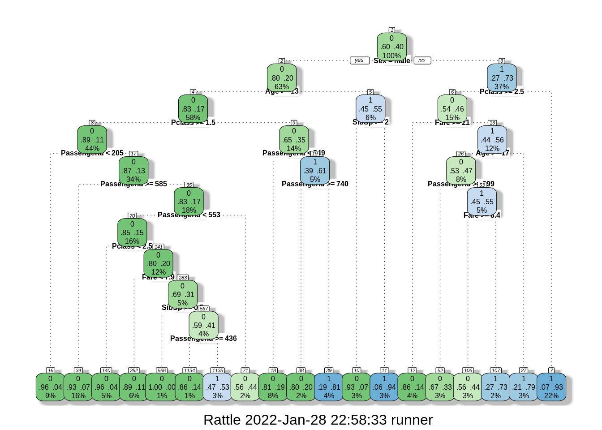
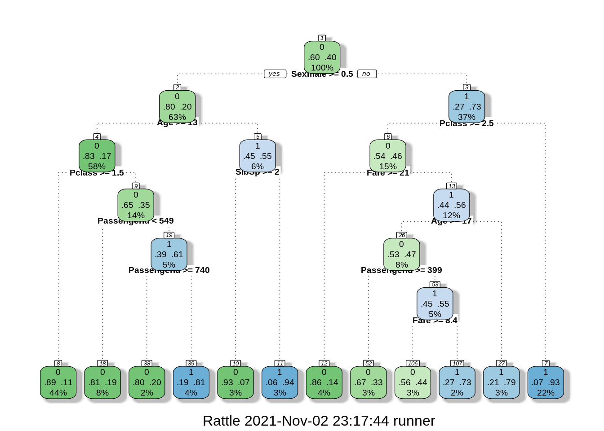
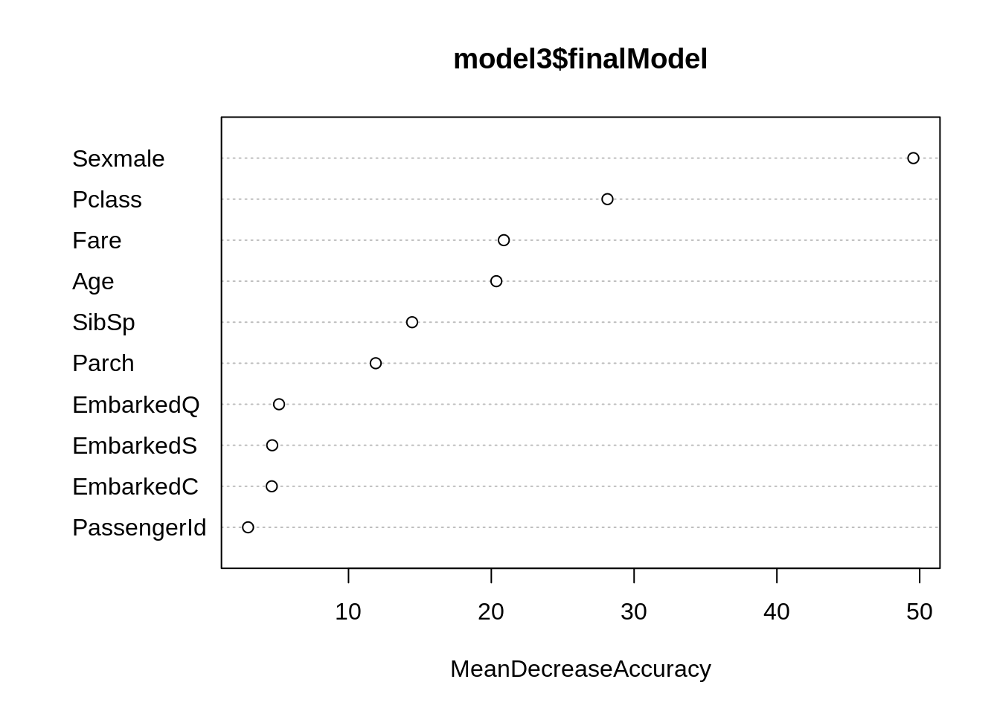
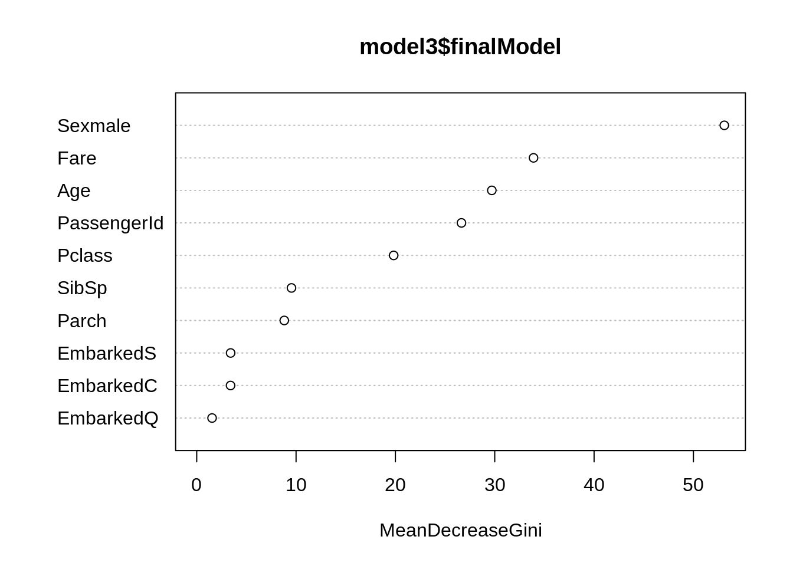

24 Regression and Classification in R
Parv Joshi
This is a video tutorial, which can be found at https://youtu.be/J2rnDy9PB3E. The code I created as part of this video is given as the contents of this file, for reference. Here are the links I used in my data set:
24.0.1 Libraries and Warnings
# Removing messages and warnings from knited version
knitr::opts_chunk$set(warning = FALSE, message = FALSE)
# Libraries
# Make sure these are installed before running them. They all are a part of CRAN.
library(RCurl)
library(tidyverse)
library(randomForest)
library(caTools)
library(car)
library(MASS)
library(leaps)
library(caret)
library(bestglm)
library(rpart)
library(rattle)24.0.2 Reading Data
# Importing the dataset
dataset = read.csv("https://raw.githubusercontent.com/Parv-Joshi/EDAV_CC_Datasets/main/Data.csv")
# str(dataset)
# View(dataset)24.0.3 Data Preprocessing
# Mean Imputation for Missing Data
dataset$Age = ifelse(is.na(dataset$Age),
ave(dataset$Age, FUN = function(x) mean(x, na.rm = T)),
dataset$Age)
dataset$Salary = ifelse(is.na(dataset$Salary),
ave(dataset$Salary, FUN = function(x) mean(x, na.rm = T)),
dataset$Salary)
# Encoding Categorical Variables
dataset$Country = factor(dataset$Country,
labels = c("France", "Spain", "Germany"),
levels = c("France", "Spain", "Germany"))
dataset$Purchased = factor(dataset$Purchased,
levels = c("Yes", "No"),
labels = c(1, 0))
# Splitting Data into Training and Testing
set.seed(123)
split = sample.split(dataset$Purchased, SplitRatio = 0.8)
training_set = subset(dataset, split == T)
test_set = subset(dataset, split == F)
# Feature Scaling
training_set[, 2:3] = scale(training_set[, 2:3])
test_set[, 2:3] = scale(test_set[, 2:3])24.0.4 Regression
# Data
data("Salaries", package = "carData")
# force(Salaries)
attach(Salaries)
detach(Salaries)
# str(Salaries)
# View(Salaries)
# Simple Variable Regression
model = lm(Salaries$salary ~ Salaries$yrs.since.phd)
model = lm(salary ~ yrs.since.phd, data = Salaries)
model##
## Call:
## lm(formula = salary ~ yrs.since.phd, data = Salaries)
##
## Coefficients:
## (Intercept) yrs.since.phd
## 91718.7 985.3
summary(model)##
## Call:
## lm(formula = salary ~ yrs.since.phd, data = Salaries)
##
## Residuals:
## Min 1Q Median 3Q Max
## -84171 -19432 -2858 16086 102383
##
## Coefficients:
## Estimate Std. Error t value Pr(>|t|)
## (Intercept) 91718.7 2765.8 33.162 <2e-16 ***
## yrs.since.phd 985.3 107.4 9.177 <2e-16 ***
## ---
## Signif. codes: 0 '***' 0.001 '**' 0.01 '*' 0.05 '.' 0.1 ' ' 1
##
## Residual standard error: 27530 on 395 degrees of freedom
## Multiple R-squared: 0.1758, Adjusted R-squared: 0.1737
## F-statistic: 84.23 on 1 and 395 DF, p-value: < 2.2e-16
stargazer::stargazer(model, type = "text")##
## ===============================================
## Dependent variable:
## ---------------------------
## salary
## -----------------------------------------------
## yrs.since.phd 985.342***
## (107.365)
##
## Constant 91,718.680***
## (2,765.792)
##
## -----------------------------------------------
## Observations 397
## R2 0.176
## Adjusted R2 0.174
## Residual Std. Error 27,533.580 (df = 395)
## F Statistic 84.226*** (df = 1; 395)
## ===============================================
## Note: *p<0.1; **p<0.05; ***p<0.01
# Multiple Variable Regression
model1 = lm(salary ~ yrs.since.phd + yrs.service, data = Salaries)
summary(model1)##
## Call:
## lm(formula = salary ~ yrs.since.phd + yrs.service, data = Salaries)
##
## Residuals:
## Min 1Q Median 3Q Max
## -79735 -19823 -2617 15149 106149
##
## Coefficients:
## Estimate Std. Error t value Pr(>|t|)
## (Intercept) 89912.2 2843.6 31.620 < 2e-16 ***
## yrs.since.phd 1562.9 256.8 6.086 2.75e-09 ***
## yrs.service -629.1 254.5 -2.472 0.0138 *
## ---
## Signif. codes: 0 '***' 0.001 '**' 0.01 '*' 0.05 '.' 0.1 ' ' 1
##
## Residual standard error: 27360 on 394 degrees of freedom
## Multiple R-squared: 0.1883, Adjusted R-squared: 0.1842
## F-statistic: 45.71 on 2 and 394 DF, p-value: < 2.2e-16
### Model:
### salary = 89912.2 + 1562.9 * yrs.since.phd + (-629.1) * yrs.service
# Categorical Variables
contrasts(Salaries$sex)## Male
## Female 0
## Male 1
# sex = relevel(sex, ref = "Male")
model2 = lm(salary ~ yrs.since.phd + yrs.service + sex, data = Salaries)
summary(model2)##
## Call:
## lm(formula = salary ~ yrs.since.phd + yrs.service + sex, data = Salaries)
##
## Residuals:
## Min 1Q Median 3Q Max
## -79586 -19564 -3018 15071 105898
##
## Coefficients:
## Estimate Std. Error t value Pr(>|t|)
## (Intercept) 82875.9 4800.6 17.264 < 2e-16 ***
## yrs.since.phd 1552.8 256.1 6.062 3.15e-09 ***
## yrs.service -649.8 254.0 -2.558 0.0109 *
## sexMale 8457.1 4656.1 1.816 0.0701 .
## ---
## Signif. codes: 0 '***' 0.001 '**' 0.01 '*' 0.05 '.' 0.1 ' ' 1
##
## Residual standard error: 27280 on 393 degrees of freedom
## Multiple R-squared: 0.1951, Adjusted R-squared: 0.189
## F-statistic: 31.75 on 3 and 393 DF, p-value: < 2.2e-16
car::Anova(model2)## Anova Table (Type II tests)
##
## Response: salary
## Sum Sq Df F value Pr(>F)
## yrs.since.phd 2.7346e+10 1 36.7512 3.15e-09 ***
## yrs.service 4.8697e+09 1 6.5447 0.01089 *
## sex 2.4547e+09 1 3.2990 0.07008 .
## Residuals 2.9242e+11 393
## ---
## Signif. codes: 0 '***' 0.001 '**' 0.01 '*' 0.05 '.' 0.1 ' ' 1## Anova Table (Type II tests)
##
## Response: salary
## Sum Sq Df F value Pr(>F)
## rank 6.9508e+10 2 68.4143 < 2.2e-16 ***
## discipline 1.9237e+10 1 37.8695 1.878e-09 ***
## yrs.since.phd 2.5041e+09 1 4.9293 0.02698 *
## yrs.service 2.7100e+09 1 5.3348 0.02143 *
## sex 7.8068e+08 1 1.5368 0.21584
## Residuals 1.9812e+11 390
## ---
## Signif. codes: 0 '***' 0.001 '**' 0.01 '*' 0.05 '.' 0.1 ' ' 1
summary(model3)##
## Call:
## lm(formula = salary ~ ., data = Salaries)
##
## Residuals:
## Min 1Q Median 3Q Max
## -65248 -13211 -1775 10384 99592
##
## Coefficients:
## Estimate Std. Error t value Pr(>|t|)
## (Intercept) 65955.2 4588.6 14.374 < 2e-16 ***
## rankAssocProf 12907.6 4145.3 3.114 0.00198 **
## rankProf 45066.0 4237.5 10.635 < 2e-16 ***
## disciplineB 14417.6 2342.9 6.154 1.88e-09 ***
## yrs.since.phd 535.1 241.0 2.220 0.02698 *
## yrs.service -489.5 211.9 -2.310 0.02143 *
## sexMale 4783.5 3858.7 1.240 0.21584
## ---
## Signif. codes: 0 '***' 0.001 '**' 0.01 '*' 0.05 '.' 0.1 ' ' 1
##
## Residual standard error: 22540 on 390 degrees of freedom
## Multiple R-squared: 0.4547, Adjusted R-squared: 0.4463
## F-statistic: 54.2 on 6 and 390 DF, p-value: < 2.2e-16
# Transformations and Interaction Terms
model4 = lm(salary ~ yrs.since.phd^2 + yrs.service, data = Salaries)
summary(model4)##
## Call:
## lm(formula = salary ~ yrs.since.phd^2 + yrs.service, data = Salaries)
##
## Residuals:
## Min 1Q Median 3Q Max
## -79735 -19823 -2617 15149 106149
##
## Coefficients:
## Estimate Std. Error t value Pr(>|t|)
## (Intercept) 89912.2 2843.6 31.620 < 2e-16 ***
## yrs.since.phd 1562.9 256.8 6.086 2.75e-09 ***
## yrs.service -629.1 254.5 -2.472 0.0138 *
## ---
## Signif. codes: 0 '***' 0.001 '**' 0.01 '*' 0.05 '.' 0.1 ' ' 1
##
## Residual standard error: 27360 on 394 degrees of freedom
## Multiple R-squared: 0.1883, Adjusted R-squared: 0.1842
## F-statistic: 45.71 on 2 and 394 DF, p-value: < 2.2e-16
model4 = lm(salary ~ yrs.since.phd + I(yrs.since.phd^2) + yrs.service, data = Salaries)
summary(model4)##
## Call:
## lm(formula = salary ~ yrs.since.phd + I(yrs.since.phd^2) + yrs.service,
## data = Salaries)
##
## Residuals:
## Min 1Q Median 3Q Max
## -63538 -18063 -1946 14919 105025
##
## Coefficients:
## Estimate Std. Error t value Pr(>|t|)
## (Intercept) 64971.002 3950.746 16.445 < 2e-16 ***
## yrs.since.phd 4222.493 394.237 10.711 < 2e-16 ***
## I(yrs.since.phd^2) -62.321 7.389 -8.434 6.42e-16 ***
## yrs.service -234.596 239.075 -0.981 0.327
## ---
## Signif. codes: 0 '***' 0.001 '**' 0.01 '*' 0.05 '.' 0.1 ' ' 1
##
## Residual standard error: 25210 on 393 degrees of freedom
## Multiple R-squared: 0.3127, Adjusted R-squared: 0.3075
## F-statistic: 59.61 on 3 and 393 DF, p-value: < 2.2e-16
model4 = lm(salary ~ yrs.since.phd + I(yrs.since.phd^2) + I(yrs.since.phd^3) + yrs.service, data = Salaries)
summary(model4)##
## Call:
## lm(formula = salary ~ yrs.since.phd + I(yrs.since.phd^2) + I(yrs.since.phd^3) +
## yrs.service, data = Salaries)
##
## Residuals:
## Min 1Q Median 3Q Max
## -63538 -18062 -1947 14917 105023
##
## Coefficients:
## Estimate Std. Error t value Pr(>|t|)
## (Intercept) 6.498e+04 5.559e+03 11.688 < 2e-16 ***
## yrs.since.phd 4.221e+03 8.990e+02 4.696 3.68e-06 ***
## I(yrs.since.phd^2) -6.227e+01 3.877e+01 -1.606 0.109
## I(yrs.since.phd^3) -6.720e-04 4.935e-01 -0.001 0.999
## yrs.service -2.346e+02 2.395e+02 -0.979 0.328
## ---
## Signif. codes: 0 '***' 0.001 '**' 0.01 '*' 0.05 '.' 0.1 ' ' 1
##
## Residual standard error: 25240 on 392 degrees of freedom
## Multiple R-squared: 0.3127, Adjusted R-squared: 0.3057
## F-statistic: 44.6 on 4 and 392 DF, p-value: < 2.2e-16
model4 = lm(I(log(salary)) ~ yrs.since.phd + I(yrs.since.phd^2) + I(yrs.since.phd^3) + yrs.service, data = Salaries)
summary(model4)##
## Call:
## lm(formula = I(log(salary)) ~ yrs.since.phd + I(yrs.since.phd^2) +
## I(yrs.since.phd^3) + yrs.service, data = Salaries)
##
## Residuals:
## Min 1Q Median 3Q Max
## -0.68247 -0.15590 -0.00244 0.14242 0.74830
##
## Coefficients:
## Estimate Std. Error t value Pr(>|t|)
## (Intercept) 1.115e+01 4.617e-02 241.467 < 2e-16 ***
## yrs.since.phd 4.073e-02 7.467e-03 5.454 8.72e-08 ***
## I(yrs.since.phd^2) -6.626e-04 3.220e-04 -2.058 0.0403 *
## I(yrs.since.phd^3) 6.168e-07 4.099e-06 0.150 0.8805
## yrs.service -1.433e-03 1.989e-03 -0.720 0.4718
## ---
## Signif. codes: 0 '***' 0.001 '**' 0.01 '*' 0.05 '.' 0.1 ' ' 1
##
## Residual standard error: 0.2096 on 392 degrees of freedom
## Multiple R-squared: 0.3575, Adjusted R-squared: 0.3509
## F-statistic: 54.52 on 4 and 392 DF, p-value: < 2.2e-16##
## Call:
## lm(formula = salary ~ yrs.since.phd:yrs.service, data = Salaries)
##
## Residuals:
## Min 1Q Median 3Q Max
## -80936 -21633 -3841 17621 106895
##
## Coefficients:
## Estimate Std. Error t value Pr(>|t|)
## (Intercept) 1.071e+05 1.983e+03 53.982 < 2e-16 ***
## yrs.since.phd:yrs.service 1.218e+01 2.431e+00 5.009 8.26e-07 ***
## ---
## Signif. codes: 0 '***' 0.001 '**' 0.01 '*' 0.05 '.' 0.1 ' ' 1
##
## Residual standard error: 29410 on 395 degrees of freedom
## Multiple R-squared: 0.05973, Adjusted R-squared: 0.05735
## F-statistic: 25.09 on 1 and 395 DF, p-value: 8.263e-07
#### Boxcox
sal = Salaries[, c(3,4,6)]
shapiro.test(Salaries$salary)##
## Shapiro-Wilk normality test
##
## data: Salaries$salary
## W = 0.95988, p-value = 6.076e-09
# Null: Data is normally distributed
# p-value = 6.076e-09 < 0.05, reject null -> NOT Normal.
model1 = lm(salary ~ yrs.since.phd + yrs.service, data = Salaries)
summary(model1)##
## Call:
## lm(formula = salary ~ yrs.since.phd + yrs.service, data = Salaries)
##
## Residuals:
## Min 1Q Median 3Q Max
## -79735 -19823 -2617 15149 106149
##
## Coefficients:
## Estimate Std. Error t value Pr(>|t|)
## (Intercept) 89912.2 2843.6 31.620 < 2e-16 ***
## yrs.since.phd 1562.9 256.8 6.086 2.75e-09 ***
## yrs.service -629.1 254.5 -2.472 0.0138 *
## ---
## Signif. codes: 0 '***' 0.001 '**' 0.01 '*' 0.05 '.' 0.1 ' ' 1
##
## Residual standard error: 27360 on 394 degrees of freedom
## Multiple R-squared: 0.1883, Adjusted R-squared: 0.1842
## F-statistic: 45.71 on 2 and 394 DF, p-value: < 2.2e-16
bc = boxcox(model1)
## [1] -0.2222222##
## Call:
## lm(formula = I(salary^best.lam) ~ yrs.since.phd + yrs.service,
## data = Salaries)
##
## Residuals:
## Min 1Q Median 3Q Max
## -0.0099656 -0.0027195 -0.0000644 0.0028614 0.0150252
##
## Coefficients:
## Estimate Std. Error t value Pr(>|t|)
## (Intercept) 7.942e-02 4.095e-04 193.953 < 2e-16 ***
## yrs.since.phd -2.260e-04 3.698e-05 -6.110 2.39e-09 ***
## yrs.service 8.892e-05 3.665e-05 2.426 0.0157 *
## ---
## Signif. codes: 0 '***' 0.001 '**' 0.01 '*' 0.05 '.' 0.1 ' ' 1
##
## Residual standard error: 0.00394 on 394 degrees of freedom
## Multiple R-squared: 0.1929, Adjusted R-squared: 0.1888
## F-statistic: 47.09 on 2 and 394 DF, p-value: < 2.2e-16
### Adj. R^2 increased
# Predictions using Training and Testing data
set.seed(123)
split = sample.split(Salaries$salary, SplitRatio = 0.8)
training_set = subset(Salaries, split == T)
test_set = subset(Salaries, split == F)
model7 = lm(salary ~ ., data = training_set)
y_pred = predict(model7, test_set)
# y_pred
data.frame(y_pred, test_set$salary)## y_pred test_set.salary
## 2 133991.08 173200
## 4 138905.04 115000
## 5 134650.37 141500
## 8 135930.61 147765
## 11 100457.55 119800
## 16 135214.59 117150
## 20 116504.49 137000
## 21 121107.75 89565
## 24 120009.45 113068
## 31 139939.95 132261
## 32 89375.54 79916
## 34 87417.62 80225
## 50 85955.45 70768
## 53 86623.38 74692
## 59 98656.53 100135
## 65 86921.88 68404
## 67 137279.32 101000
## 68 136344.57 99418
## 69 126670.46 111512
## 84 88722.90 88825
## 87 134675.41 152708
## 88 86112.35 88400
## 89 132792.62 172272
## 104 130115.59 127512
## 106 120116.27 113543
## 107 84699.94 82099
## 111 118886.12 112429
## 114 119570.45 104279
## 118 121371.46 117515
## 126 124716.43 78162
## 132 122055.79 76840
## 137 117267.04 108262
## 139 84543.04 73877
## 145 133106.42 112696
## 151 132058.21 128148
## 173 141120.02 93164
## 179 139551.03 147349
## 181 130596.04 142467
## 189 100984.98 106300
## 190 135767.06 153750
## 193 132346.97 122100
## 195 101644.27 90000
## 202 135146.11 119700
## 206 141584.07 96545
## 219 97391.59 109650
## 220 131901.31 119500
## 222 138923.43 145200
## 230 120379.98 133900
## 238 67420.64 63100
## 240 123190.87 96200
## 248 118547.28 101100
## 249 120637.05 128800
## 260 119777.43 92550
## 261 91885.61 88600
## 262 120825.64 107550
## 264 118629.05 126000
## 271 121346.42 143250
## 277 123906.89 107200
## 294 88170.11 104800
## 296 122024.10 97150
## 297 116589.36 126300
## 300 91521.73 70700
## 316 88227.16 84716
## 317 95094.83 71065
## 320 131876.27 135027
## 321 133131.46 104428
## 327 136444.74 124714
## 330 132478.83 134778
## 334 140988.16 145098
## 340 145581.67 137317
## 347 142243.36 142023
## 352 134832.31 93519
## 356 134775.58 145028
## 360 75889.64 78785
## 363 118472.15 138771
## 373 118126.66 109707
## 376 119149.83 103649
## 380 84699.94 104121
## 386 119093.10 114330
## 391 130451.66 166605
# Variable Selection
# data
data("swiss")
attach(swiss)
# ?swiss
# Best Subsets regression
models = leaps::regsubsets(Fertility ~ ., data = swiss, nvmax = 5)
summary(models)## Subset selection object
## Call: regsubsets.formula(Fertility ~ ., data = swiss, nvmax = 5)
## 5 Variables (and intercept)
## Forced in Forced out
## Agriculture FALSE FALSE
## Examination FALSE FALSE
## Education FALSE FALSE
## Catholic FALSE FALSE
## Infant.Mortality FALSE FALSE
## 1 subsets of each size up to 5
## Selection Algorithm: exhaustive
## Agriculture Examination Education Catholic Infant.Mortality
## 1 ( 1 ) " " " " "*" " " " "
## 2 ( 1 ) " " " " "*" "*" " "
## 3 ( 1 ) " " " " "*" "*" "*"
## 4 ( 1 ) "*" " " "*" "*" "*"
## 5 ( 1 ) "*" "*" "*" "*" "*"
### Therefore,
### Best 1-variable model: Fertility ~ Education
### Best 2-variables model: Fertility ~ Education + Catholic
### Best 3-variables model: Fertility ~ Education + Catholic + Infant.Mortality
### Best 4-variables model: Fertility ~ Agriculture + Education + Catholic + Infant.Mortality
### Best 5-variables model: Fertility ~ Agriculture + Examination + Education + Catholic + Infant.Mortality
models.summary = summary(models)
data.frame(Adj.R2 = which.max(models.summary$adjr2),
CP = which.min(models.summary$cp),
BIC = which.min(models.summary$bic))## Adj.R2 CP BIC
## 1 5 4 4
### Fertility ~ Agriculture + Education + Catholic + Infant.Mortality
# Stepwise Variable Selection
fit = lm(Fertility ~ ., data = swiss)
step = MASS::stepAIC(fit, direction = "both", trace = F) # change both to forward and backward
step##
## Call:
## lm(formula = Fertility ~ Agriculture + Education + Catholic +
## Infant.Mortality, data = swiss)
##
## Coefficients:
## (Intercept) Agriculture Education Catholic
## 62.1013 -0.1546 -0.9803 0.1247
## Infant.Mortality
## 1.0784
detach(swiss)
# Penalized Regression
ames = read.csv("https://raw.githubusercontent.com/Parv-Joshi/EDAV_CC_Datasets/main/Ames_Housing_Data.csv")
# str(ames)
anyNA(ames)## [1] FALSE
set.seed(123)
training.samples = createDataPartition(ames$SalePrice, p = 0.75, list = FALSE)
train.data = ames[training.samples,]
test.data = ames[-training.samples,]
lambda = 10^seq(-3, 3, length = 100)
# Ridge Regression
set.seed(123)
ridge = train(SalePrice ~ ., data = train.data, method = "glmnet",
trControl = trainControl("cv", number = 10),
tuneGrid = expand.grid(alpha = 0, lambda = lambda))
# LASSO
set.seed(123)
lasso = train(SalePrice ~ ., data = train.data, method = "glmnet",
trControl = trainControl("cv", number = 10),
tuneGrid = expand.grid(alpha = 1, lambda = lambda))
# Elastic Net
set.seed(123)
elastic = train(SalePrice ~ ., data = train.data, method = "glmnet",
trControl = trainControl("cv", number = 10),
tuneLength = 10)
# Comparison
models = list(ridge = ridge, lasso = lasso, elastic = elastic)
resamples(models) %>% summary(metric = "RMSE")##
## Call:
## summary.resamples(object = ., metric = "RMSE")
##
## Models: ridge, lasso, elastic
## Number of resamples: 10
##
## RMSE
## Min. 1st Qu. Median Mean 3rd Qu. Max. NA's
## ridge 24044.91 29603.57 30799.80 32919.29 37210.80 45150.33 0
## lasso 23614.27 29604.97 31077.67 32800.93 37787.06 44271.58 0
## elastic 23725.92 29688.82 31124.32 32770.19 37752.31 44115.51 0
# Since Elastic model has the lowest mean RMSE, we can conclude that the Elastic model is the best.24.0.5 Classification
# Data
data("PimaIndiansDiabetes2", package = "mlbench")
# str(PimaIndiansDiabetes2)
# View(PimaIndiansDiabetes2)
PimaIndiansDiabetes2$diabetes = as.factor(PimaIndiansDiabetes2$diabetes)
PimaIndiansDiabetes2 = na.omit(PimaIndiansDiabetes2)
attach(PimaIndiansDiabetes2)
# Training and Testing
set.seed(123)
training.samples = createDataPartition(diabetes, p = 0.8, list = FALSE)
train.data = PimaIndiansDiabetes2[training.samples,]
test.data = PimaIndiansDiabetes2[-training.samples,]
# Logistic Regression
model = glm(diabetes ~ ., data = train.data, family = binomial)
summary(model)##
## Call:
## glm(formula = diabetes ~ ., family = binomial, data = train.data)
##
## Deviance Residuals:
## Min 1Q Median 3Q Max
## -2.5832 -0.6544 -0.3292 0.6248 2.5968
##
## Coefficients:
## Estimate Std. Error z value Pr(>|z|)
## (Intercept) -1.053e+01 1.440e+00 -7.317 2.54e-13 ***
## pregnant 1.005e-01 6.127e-02 1.640 0.10092
## glucose 3.710e-02 6.486e-03 5.719 1.07e-08 ***
## pressure -3.876e-04 1.383e-02 -0.028 0.97764
## triceps 1.418e-02 1.998e-02 0.710 0.47800
## insulin 5.940e-04 1.508e-03 0.394 0.69371
## mass 7.997e-02 3.180e-02 2.515 0.01190 *
## pedigree 1.329e+00 4.823e-01 2.756 0.00585 **
## age 2.718e-02 2.020e-02 1.346 0.17840
## ---
## Signif. codes: 0 '***' 0.001 '**' 0.01 '*' 0.05 '.' 0.1 ' ' 1
##
## (Dispersion parameter for binomial family taken to be 1)
##
## Null deviance: 398.80 on 313 degrees of freedom
## Residual deviance: 267.18 on 305 degrees of freedom
## AIC: 285.18
##
## Number of Fisher Scoring iterations: 5
probabilities = predict(model, test.data, type = "response")
probabilities## 19 21 32 55 64 71
## 0.192628377 0.485262263 0.662527248 0.798681474 0.278073391 0.145877334
## 72 74 98 99 108 111
## 0.314265178 0.232071188 0.007697533 0.066394837 0.357546947 0.552586956
## 115 128 154 182 215 216
## 0.715548197 0.132717063 0.706670106 0.189297618 0.291196167 0.911862874
## 224 229 260 293 297 313
## 0.704569592 0.993419157 0.932506403 0.721153294 0.328274489 0.293808296
## 316 326 357 369 376 385
## 0.120862955 0.201559764 0.390156419 0.022075579 0.885924184 0.075765425
## 386 393 394 410 429 447
## 0.042383376 0.102435789 0.095664525 0.885380718 0.379195274 0.053098974
## 450 453 468 470 477 487
## 0.091641699 0.097155564 0.122327231 0.831420989 0.216021458 0.525840641
## 541 542 546 552 555 556
## 0.461122260 0.270914264 0.890122464 0.066719675 0.068520682 0.197336318
## 562 563 564 577 589 592
## 0.894087110 0.075000107 0.091244654 0.163897301 0.912857186 0.200938223
## 595 600 609 610 621 634
## 0.491041316 0.048192839 0.549602575 0.034910473 0.203922043 0.081878938
## 666 673 674 681 683 694
## 0.133609108 0.100033198 0.782544310 0.007547670 0.145787456 0.629221735
## 697 699 710 716 717 719
## 0.485455842 0.290737653 0.141965217 0.925604098 0.839268863 0.161190610
## 722 731 733 734 746 766
## 0.168129887 0.191170873 0.852375783 0.078840151 0.305248512 0.125461309
contrasts(diabetes)## pos
## neg 0
## pos 1
predicted.classes = ifelse(probabilities > 0.5, "pos", "neg")
predicted.classes## 19 21 32 55 64 71 72 74 98 99 108 111 115
## "neg" "neg" "pos" "pos" "neg" "neg" "neg" "neg" "neg" "neg" "neg" "pos" "pos"
## 128 154 182 215 216 224 229 260 293 297 313 316 326
## "neg" "pos" "neg" "neg" "pos" "pos" "pos" "pos" "pos" "neg" "neg" "neg" "neg"
## 357 369 376 385 386 393 394 410 429 447 450 453 468
## "neg" "neg" "pos" "neg" "neg" "neg" "neg" "pos" "neg" "neg" "neg" "neg" "neg"
## 470 477 487 541 542 546 552 555 556 562 563 564 577
## "pos" "neg" "pos" "neg" "neg" "pos" "neg" "neg" "neg" "pos" "neg" "neg" "neg"
## 589 592 595 600 609 610 621 634 666 673 674 681 683
## "pos" "neg" "neg" "neg" "pos" "neg" "neg" "neg" "neg" "neg" "pos" "neg" "neg"
## 694 697 699 710 716 717 719 722 731 733 734 746 766
## "pos" "neg" "neg" "neg" "pos" "pos" "neg" "neg" "neg" "pos" "neg" "neg" "neg"
caret::confusionMatrix(factor(predicted.classes),
factor(test.data$diabetes),
positive = "pos")## Confusion Matrix and Statistics
##
## Reference
## Prediction neg pos
## neg 44 11
## pos 8 15
##
## Accuracy : 0.7564
## 95% CI : (0.646, 0.8465)
## No Information Rate : 0.6667
## P-Value [Acc > NIR] : 0.05651
##
## Kappa : 0.4356
##
## Mcnemar's Test P-Value : 0.64636
##
## Sensitivity : 0.5769
## Specificity : 0.8462
## Pos Pred Value : 0.6522
## Neg Pred Value : 0.8000
## Prevalence : 0.3333
## Detection Rate : 0.1923
## Detection Prevalence : 0.2949
## Balanced Accuracy : 0.7115
##
## 'Positive' Class : pos
##
# Stepwise regression
step = MASS::stepAIC(model, direction = "both", k = log(nrow(PimaIndiansDiabetes2)), trace = FALSE)
step$anova## Stepwise Model Path
## Analysis of Deviance Table
##
## Initial Model:
## diabetes ~ pregnant + glucose + pressure + triceps + insulin +
## mass + pedigree + age
##
## Final Model:
## diabetes ~ pregnant + glucose + mass + pedigree
##
##
## Step Df Deviance Resid. Df Resid. Dev AIC
## 1 305 267.1825 320.9239
## 2 - pressure 1 0.0007857024 306 267.1833 314.9534
## 3 - insulin 1 0.1591672501 307 267.3425 309.1413
## 4 - triceps 1 0.4434205054 308 267.7859 303.6135
## 5 - age 1 2.4276790188 309 270.2136 300.0699
# Best subset regression
cv_data = model.matrix( ~ ., PimaIndiansDiabetes2)[,-1]
cv_data = data.frame(cv_data)
best = bestglm(cv_data, IC = "BIC", family = binomial)
best## BIC
## BICq equivalent for q in (0.359009418385306, 0.859446547266463)
## Best Model:
## Estimate Std. Error z value Pr(>|z|)
## (Intercept) -10.09201799 1.080251137 -9.342289 9.427384e-21
## glucose 0.03618899 0.004981946 7.264026 3.757357e-13
## mass 0.07444854 0.020266697 3.673442 2.393046e-04
## pedigree 1.08712862 0.419408437 2.592052 9.540525e-03
## age 0.05301206 0.013439480 3.944502 7.996582e-05
detach(PimaIndiansDiabetes2)
# Decision Tree Classification
data = read.csv("https://raw.githubusercontent.com/Parv-Joshi/EDAV_CC_Datasets/main/Titanic.csv")
attach(data)
# str(data)
# Excluding Variables
data = subset(data, select = -c(Name, Ticket, Cabin))
# Removing Missing Data
data = subset(data, !is.na(Age))
# Testing and Training set
set.seed(123)
training.samples = data$Survived %>%
createDataPartition(p = 0.8, list = FALSE)
train.data = data[training.samples,]
test.data = data[-training.samples,]
# Factoring Survived
train.data$Survived = as.factor(train.data$Survived)
test.data$Survived = as.factor(test.data$Survived)
# Decision Trees
model = rpart::rpart(Survived ~ ., data = train.data, control = rpart.control(cp = 0))
rattle::fancyRpartPlot(model, cex = 0.5)
set.seed(123)
train.data$Survived = as.factor(train.data$Survived)
model2 = train(Survived ~ .,
data = train.data,
method = "rpart",
trControl = trainControl("cv", number = 10),
tuneLength = 100)
fancyRpartPlot(model2$finalModel, cex = 0.6)
probabilities = predict(model2, newdata = test.data)
# we don't need to do contrasts since Survived is already given in o and 1.
predicted.classes = ifelse(probabilities == 1, "1", "0")
caret::confusionMatrix(factor(predicted.classes),
factor(test.data$Survived),
positive = "1")## Confusion Matrix and Statistics
##
## Reference
## Prediction 0 1
## 0 74 19
## 1 5 44
##
## Accuracy : 0.831
## 95% CI : (0.759, 0.8886)
## No Information Rate : 0.5563
## P-Value [Acc > NIR] : 3.722e-12
##
## Kappa : 0.6497
##
## Mcnemar's Test P-Value : 0.007963
##
## Sensitivity : 0.6984
## Specificity : 0.9367
## Pos Pred Value : 0.8980
## Neg Pred Value : 0.7957
## Prevalence : 0.4437
## Detection Rate : 0.3099
## Detection Prevalence : 0.3451
## Balanced Accuracy : 0.8176
##
## 'Positive' Class : 1
##
# Random Forest
set.seed(123)
model3 = train(Survived ~ .,
data = train.data,
method = "rf",
trControl = trainControl("cv", number = 10),
importance = TRUE)
probabilities = predict(model3, newdata = test.data)
predicted.classes = ifelse(probabilities == 1, "1", "0")
caret::confusionMatrix(factor(predicted.classes),
factor(test.data$Survived),
positive = "1")## Confusion Matrix and Statistics
##
## Reference
## Prediction 0 1
## 0 76 21
## 1 3 42
##
## Accuracy : 0.831
## 95% CI : (0.759, 0.8886)
## No Information Rate : 0.5563
## P-Value [Acc > NIR] : 3.722e-12
##
## Kappa : 0.6474
##
## Mcnemar's Test P-Value : 0.0005202
##
## Sensitivity : 0.6667
## Specificity : 0.9620
## Pos Pred Value : 0.9333
## Neg Pred Value : 0.7835
## Prevalence : 0.4437
## Detection Rate : 0.2958
## Detection Prevalence : 0.3169
## Balanced Accuracy : 0.8143
##
## 'Positive' Class : 1
##
randomForest::varImpPlot(model3$finalModel, type = 1) # MeanDecreaseAccuracy
caret::varImp(model3, type = 1)## rf variable importance
##
## Overall
## Sexmale 100.000
## Pclass 54.019
## Fare 38.444
## Age 37.316
## SibSp 24.658
## Parch 19.187
## EmbarkedQ 4.655
## EmbarkedS 3.630
## EmbarkedC 3.560
## PassengerId 0.000
randomForest::varImpPlot(model3$finalModel, type = 2) # MeanDecreaseGini
caret::varImp(model3, type = 2)## rf variable importance
##
## Overall
## Sexmale 100.000
## Fare 62.753
## Age 54.613
## PassengerId 48.686
## Pclass 35.447
## SibSp 15.503
## Parch 14.097
## EmbarkedS 3.623
## EmbarkedC 3.606
## EmbarkedQ 0.000
detach(data)